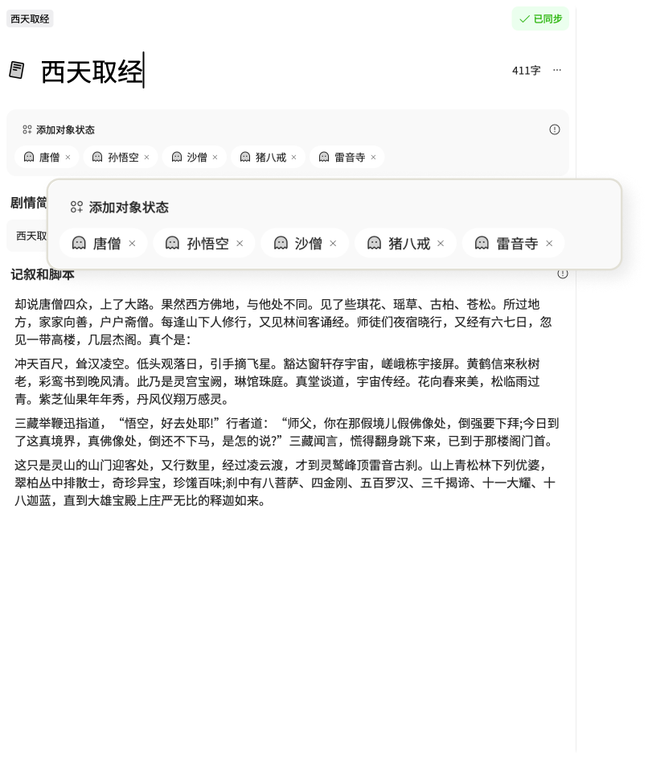
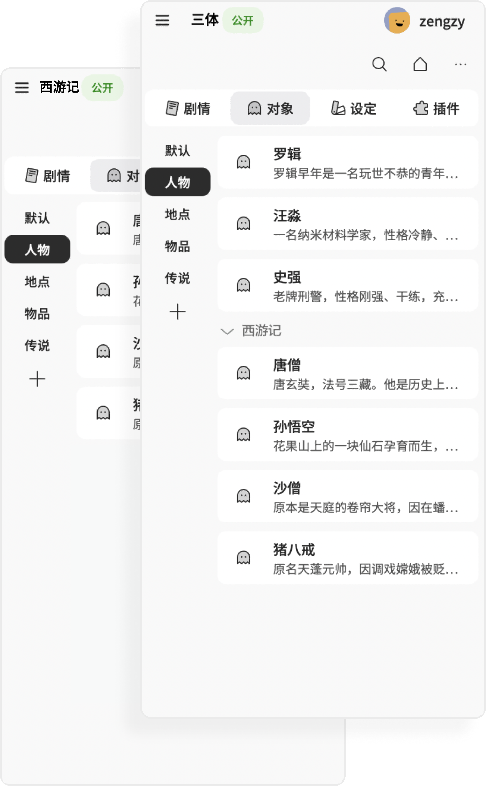
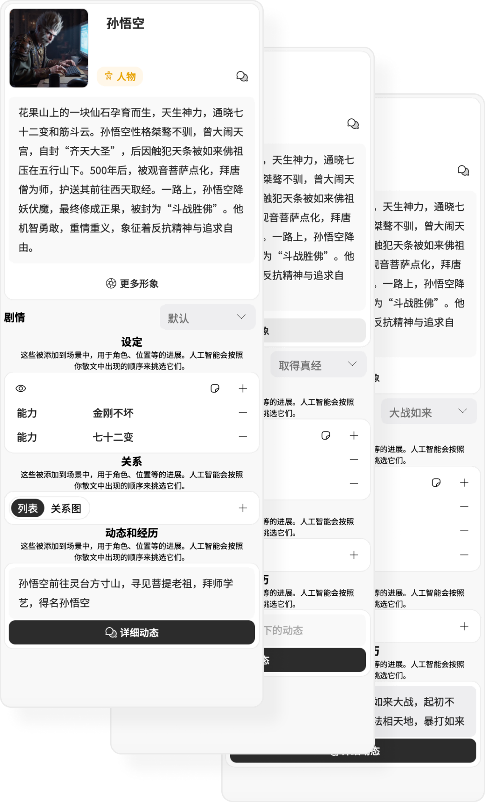
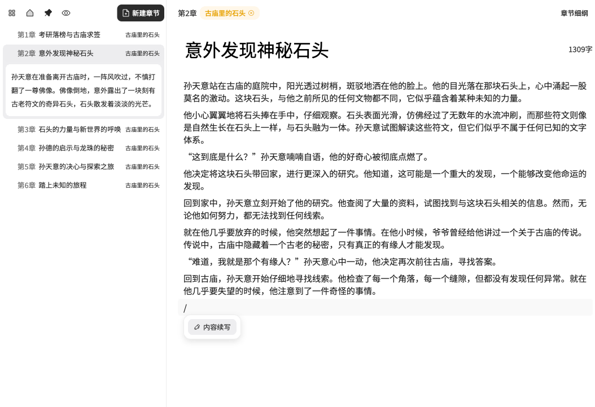
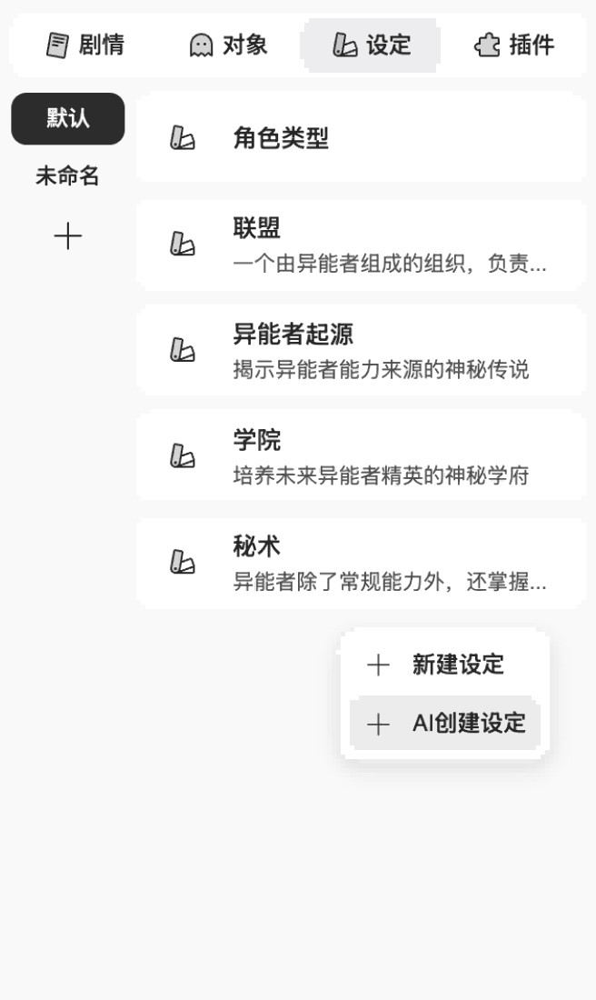

重新定义写作，
创造你的世界，
介子集成先进的AI技术为每一个人，每一个团队，提供优秀的内容创作平台、打开创作的思路，构建充满想象的世界，让创作变得轻而易举

身如芥子，心藏须弥
用介子，让你的创意成为现实
介子用前沿的AI技术，为你预先解决了基础的文本生成需求，你可以迅速构建作品的独特宏大世界观，介子帮你将创意转化为现实，使作品从核心创意到具体文本的过程如搭积木般简单明了。
- 情节
你的每一个情节片段 随时记录你的灵光一现，每当你需要，AI可以帮你编写进你的故事，让写作像搭建积木一般
- 对象
所有与你故事相关的内容，包括角色、地点、传说或物品等信息，AI会根据你的需要需要知道什么，它就会在这里查找。
- 设定
用来丰富你的世界观设定，无论是能力、性格、技能、称号、职业，规则、任你设置
- 插件
更多有趣的功能，聊天机器人、地图工具、角色关系、创意工坊，让创作玩出新花样
用介子，让你的创意成为现实
介子用前沿的AI技术，为你预先解决了基础的文本生成需求，你可以迅速构建作品的独特宏大世界观，介子帮你将创意转化为现实，使作品从核心创意到具体文本的过程如搭积木般简单明了。
AI参考跟踪
在情节中添加对象，它将不断跟踪您所有的剧情，您可以随时知道故事和角色的进展
跨项目共享
可以借用不同作品，甚至其他作者的作品中的对象，不必反复输入同样的内容，让写作更加有趣
动态变化
所有对象都可以随着剧情进展而变化，无论是形象还是设定，让你的角色更立体

随时迸发，无畏瓶颈
介子的AI可以介入创作中的任何一个环节，无论是人物设定、情节构思、章节生成、章节大纲生成、风格化续写，介子可以为你任何阶段的灵感提供AI协助。
情节构思
在介子中，你可以随时用AI创建情节，AI将会基于你创建的世界观为你提供灵感

章节生成
不喜欢AI一键生成的情节？ 介子通过AI帮助你把精心设计的情节、角色转为章节大纲及正文，让你的灵感落地
风格化正文写作
在介子中，你可以选择你喜欢的文字风格进行写作或续写，我们提供所有的基础需求，你可以直观地控制AI
对象创建
任何时候你都可以使用AI创建角色、物品、世界观设定，AI将基于现有的所有内容为你提供灵感

看看用户们怎么说
- 用介子写作的作者AI辅助创作这一点非常
我使用AI工具，但我并不信任AI一键生成的作品，AI始终只能是辅助作者进行创作，介子提供的方法在这一点上做得非常好。
- 一个很P的野生作者完美契合我编写世界观的需求
介子提供的世界观的构建工具，包括剧情大纲、和人物、设定，可以直接参考进ai的上下文中，真的非常有用。
- 阅读爱好者特别适合二创
我没系统的写过小说，但是我也用用介子进行二创，一些无厘头的奇思妙想在这里很快就能写出来。
和介子一起开始今天的工作
一个专家为您的下一个想法创建，遵循最佳实践，删除障碍，按时交付。
推荐chrome
网页端直接访问
下载PC端应用
WINDOWS 10/11
正在开发....
MAC OS